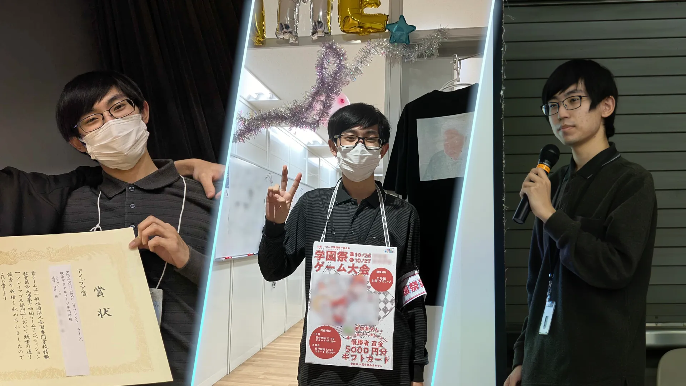
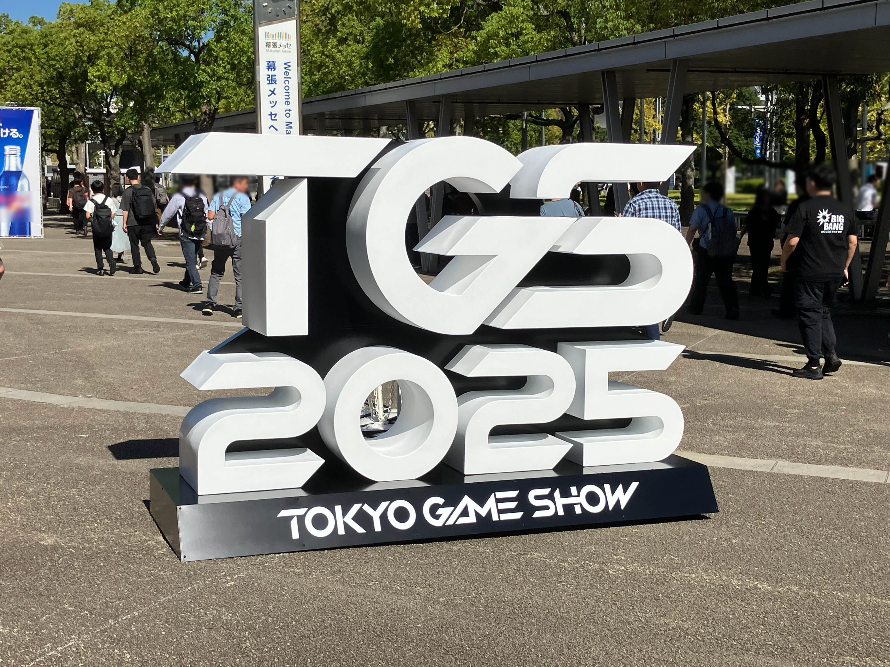
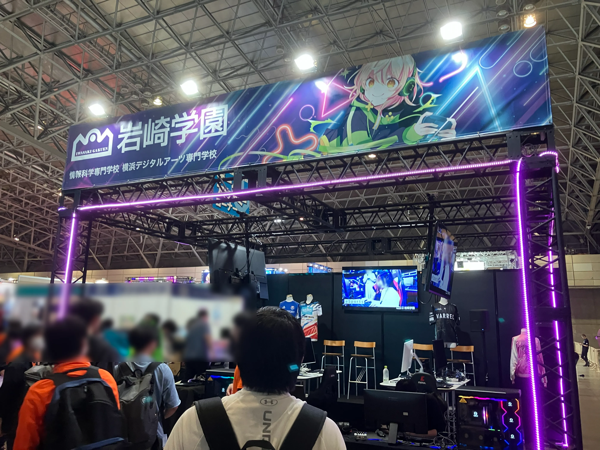
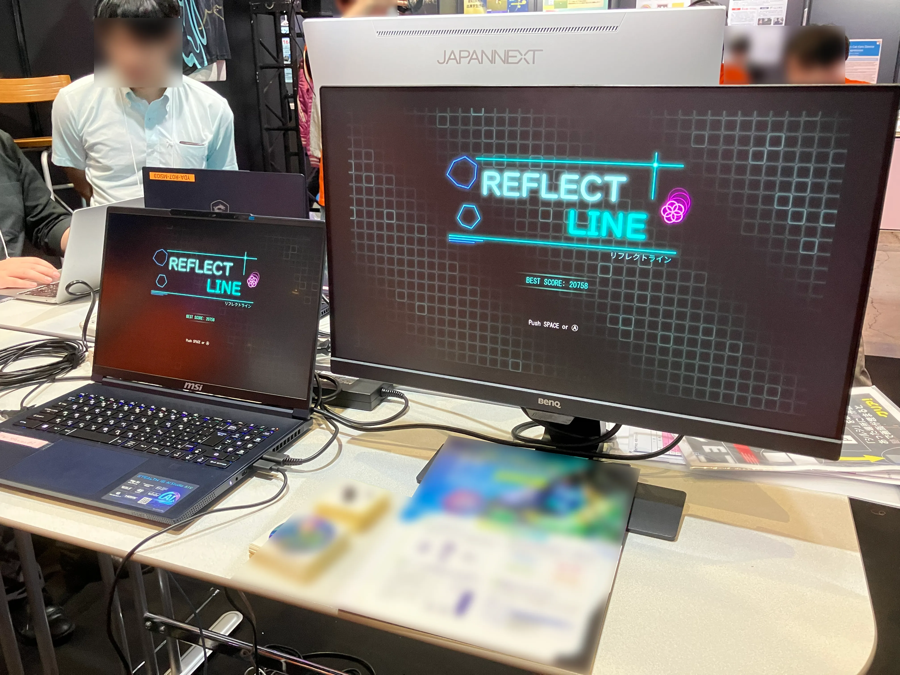
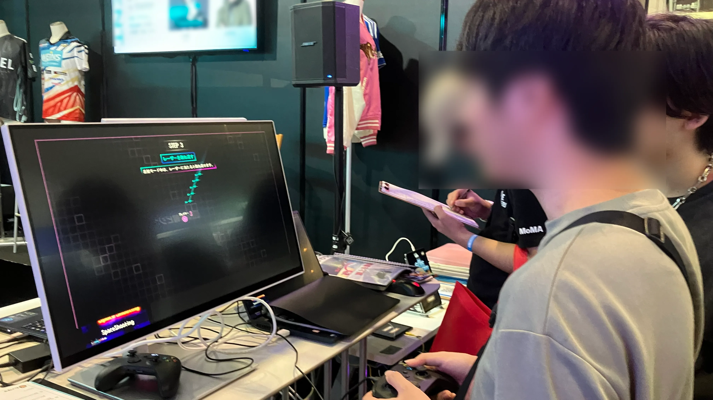

実績
代表作「REFLECT LINE」が、学外のコンテストで「アイデア賞」を受賞しました。

作品の詳細は、以下のページからご覧いただけます。


学外展示

東京ゲームショウでの学園全体の出展に参加し、作品を展示しました。




サークル活動
「ゲーム制作サークル」に所属しています。
授業外でも先輩・後輩とチームを組み、継続的にチーム開発の経験を積んでいます。
また、1年間サークルの幹部として経理・会計を担当した経験もあります。


サークルでは、3日間のゲームジャムを定期的に実施しています。
短期間開発を通して、初日の企画を早く決めることや事前準備の重要性などを学び、実践的なチーム開発経験を積んでいます。


従来の管理方法では、サークル費と学園祭などのイベント収益が混在しており、確認や整理に手間がかかる状態でした。
そこで用途ごとに分けて管理できるよう、お金の保管方法と資料の整理方法を改善しました。
その結果、翌年以降の管理がスムーズになるよう体制を整え、後輩へ引き継ぐことができました。

ゲームジャム運営
学内で開催されるゲームジャムの運営メンバーとして活動しています。
ゲームジャム本番では開発にも参加し、リードプログラマーとしてチームを率いています。
参加者をランダムにチーム編成するためのツールを開発しました。
運営の技術担当として、チーム分けを効率化し、当日の進行を円滑に進められるよう貢献しました。


2026年夏に開催した時の集合写真

前日準備の様子


当日準備の様子

ゲームジャム本番、作品プレゼンの様子